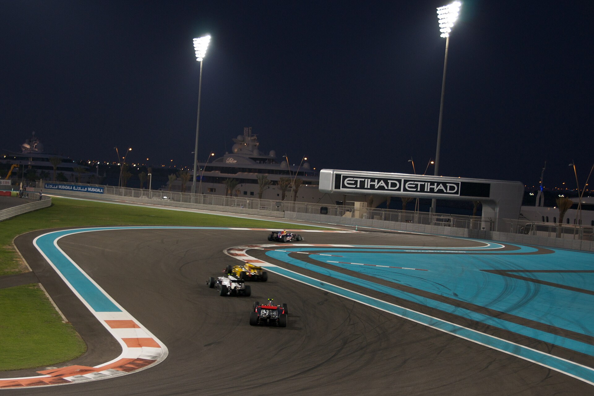

Yas Marina Circuit
Country: United Arab Emirates | Season finale · Lap length: 5.281 km · Race laps: 58

About This Track
Yas Marina Circuit on Yas Island in Abu Dhabi often hosts the final round of the Formula 1 world championship. The modern pit building, marina, and five-star hotel create a unique end-of-season atmosphere.
The layout was redesigned in 2021 to improve overtaking. The old slow hairpin behind the hotel was removed and replaced with a faster Turns 5–9 sequence that flows more naturally and encourages side-by-side racing.
The race starts in daylight and finishes under floodlights as the sun sets over the Persian Gulf, making it one of the most visually striking events on the calendar. The twilight timing affects track temperature and tyre behaviour.
The long back straight into Turn 9 is a primary DRS overtaking zone. Turn 1 after the main straight is another key passing place, especially when drivers lock up under braking from high speed.
Abu Dhabi is a popular destination for teams and fans at season's end. Championship trophies are often decided here, adding extra tension to every position on track.
History
The Abu Dhabi Grand Prix joined the calendar in 2009 as Formula 1 expanded into the Middle East. Hermann Tilke designed the circuit on Yas Island, combining a permanent track with a marina and entertainment district.
Sebastian Vettel won the inaugural race for Red Bull. Lewis Hamilton, Max Verstappen, and other champions have since added Abu Dhabi victories to their records.
The 2021 season finale here was one of the most controversial in history. Hamilton led the title-deciding race late on before a safety-car restart allowed Verstappen to pass on the final lap and win the championship.
The 2021 layout change was a direct response to criticism that the old circuit produced processional racing. Early reviews of the new section were positive, with more overtaking through the hotel complex.
Abu Dhabi has become the traditional season closer. Teams often use the weekend to evaluate development directions for the following year, especially when new regulations — like the 2026 reset — are approaching.
Famous Sections
Turns 5–7 through the hotel section and the long back straight into Turn 9 are key battle zones. Turn 1 after the main straight is the primary overtaking spot.